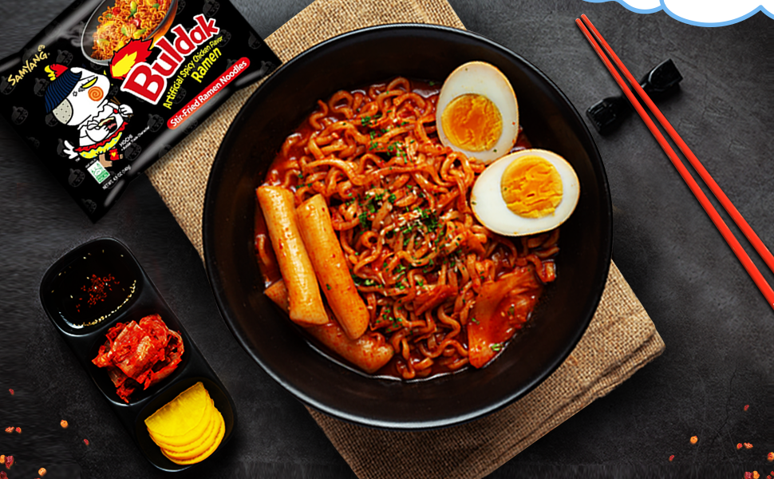
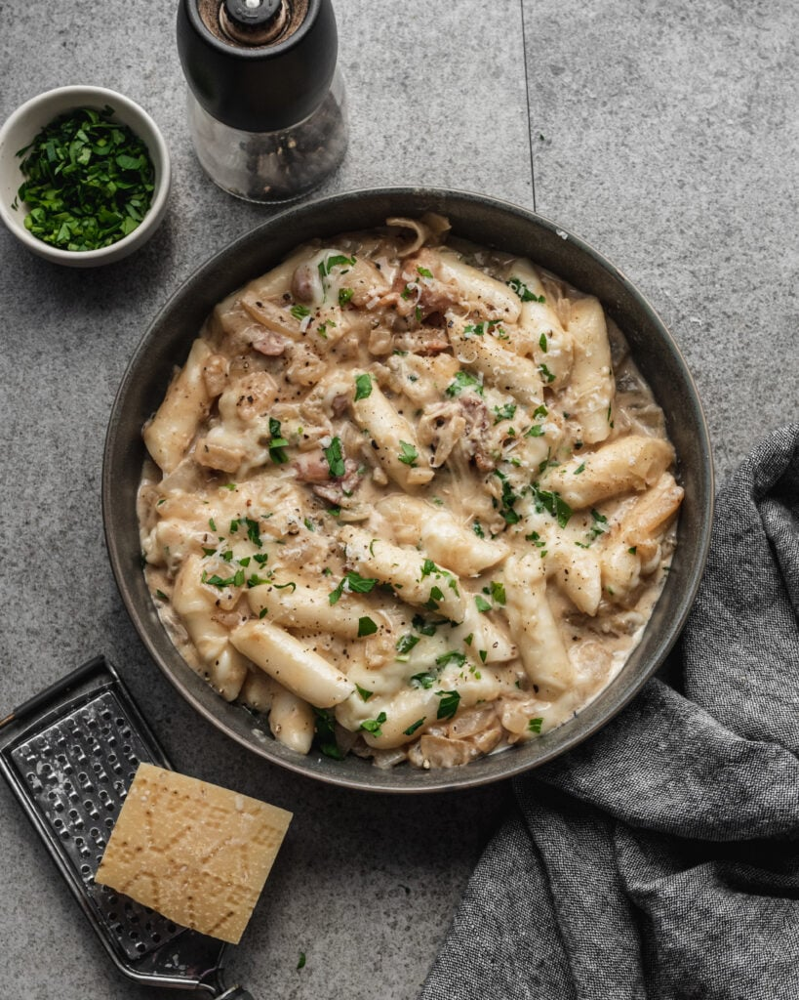

Buldak Ramen Recipe

This is a simple Buldak ramen recipe
Very delicious noodles with a little bit of spicy
Ingredients
- noodles
- egg
- teokbokki
- sauce
- sesame
Steps
- Boil an egg for 7 minutes.
- Put the noodles and tteokbokki into boiling water for 5 minutes.
- Remove the water, remain 5 tablespoons of water.
- Add the sauce and stir well.
- Add the egg and some sesame seeds.
Carbonara Tteokbokki Recipe

This is a simple carbonara tteokbokki recipe
Very delicious tteokbokki with a bacon and broccoli
Ingredients
- rice flour
- water
- sault
- milk
- bacon
- oil
- broccoli
- green onion
Steps
- Take 200 gr of rice flour.
- Gradually add 100 ml of water into the flour and stir.
- Add 1 tablespoon of sault.
- Roll out the dough.
- Cut the dough into equal finger-sized pieces.
- Put the pieces into boiling water for 20 minutes.
- Remove the water after tteokbokki cooked.
- Put a little bit of oil into the pan and add bacon.
- Cook the bacon for 4 minutes.
- Add tteokbokki and broccoli to the bacon.
- Pour the milk into the pan and stir over medium heat.
- Add sault if needed.
- Cook everything for another 4-10 minutes.
- Chop green onion and add to carbonara tteokbokki.
Kimbap Recipe

This is a simple kimbap recipe
Very delicious kimbap with a carrot and an egg
Ingredients
- short grain rice
- nori seaweed | kim
- carrot
- egg
- cucumber
- sausage
- sault
- oil
Steps
- Rinse the rice several times in cold water.
- Put the rice into boiling water and cook for 10 minutes over high heat.
- Add sault.
- Cook the rice for another 5 minutes over medium heat.
- Remove the water after the rice is cooked.
- Mix the white and yolk and pour into a frying pan.
- Remove the egg pancake from the frying pan and cut it into thin pieces.
- Cut a carrot into thin slices.
- Pour oil into the frying pan and add the carrot.
- Cut the sausage into thin slices and add to the pan.
- Fry everything for 5 minutes.
- Cut a cucumber into thin slices.
- Place the rice on the nori. leave 2 cm at the top.
- Place the chopped egg on the rice.
- Place carrot and cucumber on the rice.
- Place the sausage on the rice.
- Roll the nori with everything into a tube.
- Brush the kimbap (nori) with oil.
- Cut the kimbap into equal pieces.